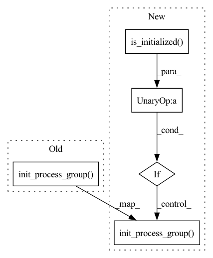

Pattern ID :8137
Before Change
else:
// Here, we"ll use torch.distributed.
// Initializes the distributed backend which will take care of sychronizing nodes/GPUs
torch.distributed.init_process_group(backend="nccl")
device = torch.device("cuda", self.local_rank)
n_gpu = 1
if device.type == "cuda":After Change
else:
// Here, we"ll use torch.distributed.
// Initializes the distributed backend which will take care of sychronizing nodes/GPUs
if not torch.distributed.is_initialized() :
torch.distributed.init_process_group(backend="nccl", timeout=self.ddp_timeout_delta)
device = torch.device("cuda", self.local_rank)
self._n_gpu = 1
if device.type == "cuda":In pattern: SUPERPATTERN
Frequency: 4
Non-data size: 5
Instances Fragment ID: 28758096
Project Name: georgianpartners/multimodal-toolkit
Commit Name: 129c44138e53b3d576e16e588e6fd0d9ceec243a
Time: 2023-03-01
Author: akash.saravanan@georgian.io
File Name: multimodal_exp_args.py
M Class Name: OurTrainingArguments
N Class Name: OurTrainingArguments
M Method Name: _setup_devices(1)
N Method Name: _setup_devices(1)
M Parent Class: TrainingArguments
N Parent Class: TrainingArguments
M File Name: multimodal_exp_args.py
N File Name: multimodal_exp_args.py
M Start Line: 194
M End Line: 214
N Start Line: 194
N End Line: 219
Before Change
self.init_process_group(backend, timeout, init_method)
def init_process_group(self, backend, timeout, init_method):
return torch.distributed.init_process_group( backend,
timeout=timeout,
init_method=init_method)
def all_reduce(self,
tensor,
op=torch.distributed.ReduceOp.SUM,After Change
self.init_process_group(backend, timeout, init_method)
def init_process_group(self, backend, timeout, init_method):
if not torch.distributed.is_initialized() :
torch.distributed.init_process_group( backend,
timeout=timeout,
init_method=init_method)
def all_reduce(self,
tensor,
op=torch.distributed.ReduceOp.SUM, Fragment ID: 28758095
Project Name: microsoft/deepspeed
Commit Name: 9f5895cb7a7db8248295038543d75a4334ee5c44
Time: 2022-07-21
Author: qganthony@yahoo.com
File Name: deepspeed/comm/torch.py
M Class Name: TorchBackend
N Class Name: TorchBackend
M Method Name: init_process_group(4)
N Method Name: init_process_group(4)
M Parent Class: Backend
N Parent Class: Backend
M File Name: deepspeed/comm/torch.py
N File Name: deepspeed/comm/torch.py
M Start Line: 38
M End Line: 40
N Start Line: 38
N End Line: 43
Before Change
self.warn_unscaled_loss = True
if dist_init_required:
dist.init_process_group(backend="nccl")
self._do_args_sanity_check(args)
self._configure_with_arguments(args, mpu)
self._do_sanity_check()After Change
self.dist_backend = "nccl"
if dist_init_required:
if not dist.is_initialized() :
logging.info("Initializing torch distributed with backend: {}".format(
self.dist_backend))
dist.init_process_group(backend=self.dist_backend)
else:
logging.warning(
"Was given dist_init_required=True but detected that torch"
"distributed was already initialized, cannot initialize twice.") Fragment ID: 28758093
Project Name: microsoft/deepspeed
Commit Name: 5aa58b3878789332856af9107bef5768dd3e1c9c
Time: 2020-02-26
Author: jerasley@microsoft.com
File Name: deepspeed/pt/deepspeed_light.py
M Class Name: DeepSpeedLight
N Class Name: DeepSpeedLight
M Method Name: __init__(10)
N Method Name: __init__(10)
M Parent Class: Module
N Parent Class: Module
M File Name: deepspeed/pt/deepspeed_light.py
N File Name: deepspeed/pt/deepspeed_light.py
M Start Line: 123
M End Line: 123
N Start Line: 122
N End Line: 136